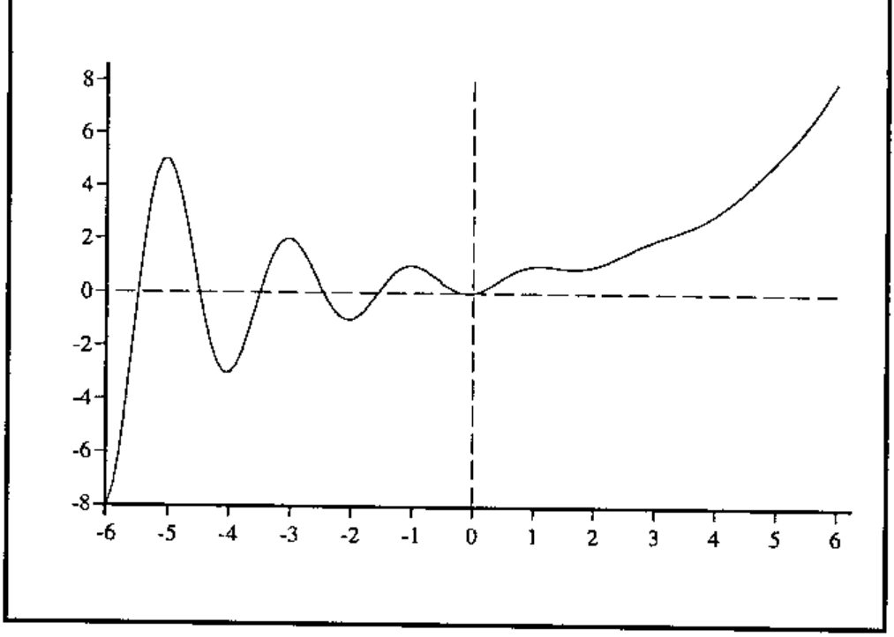
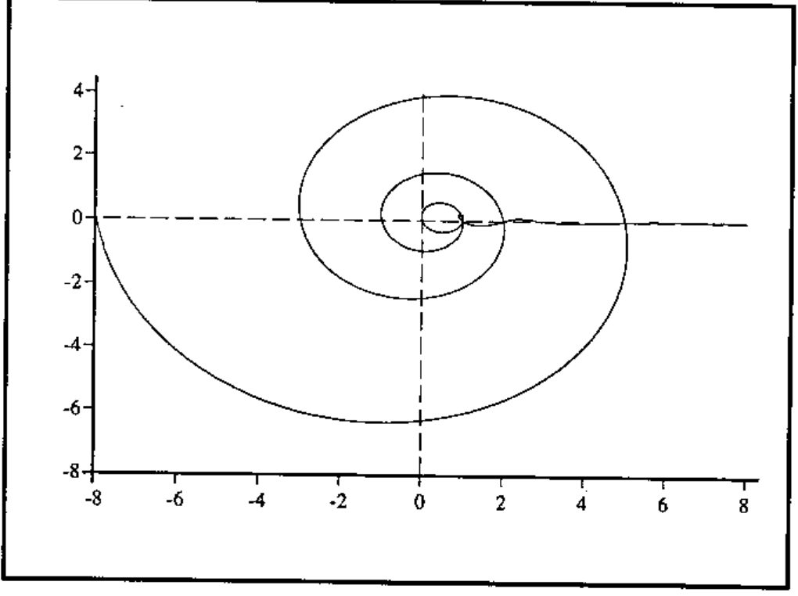
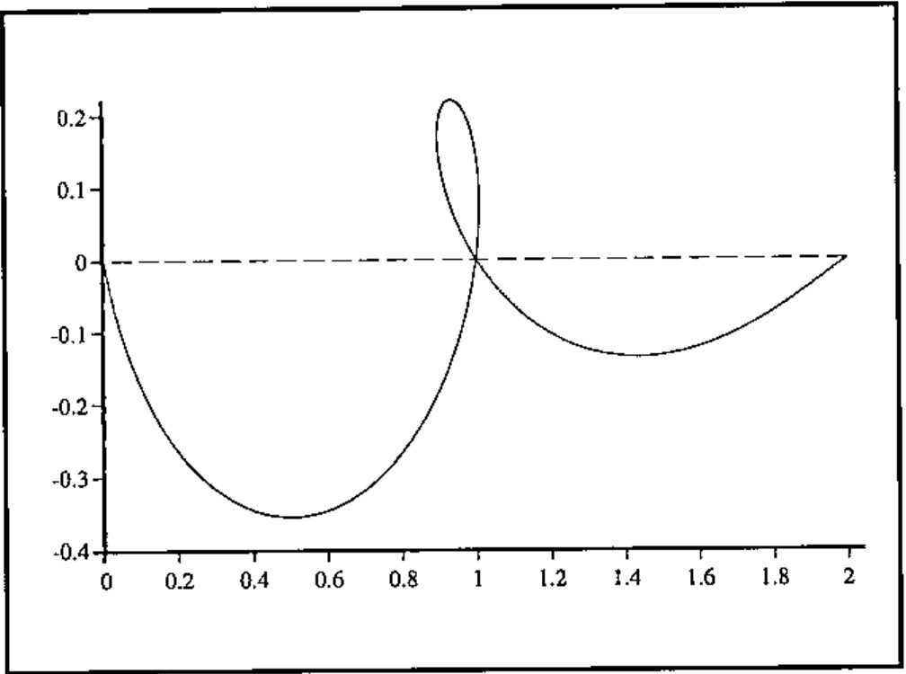

Functional Extensions to the Fibonacci Sequence
Vector 15:4, page 123
Transcribed from the printed issue; not yet reviewed. Read it in the PDF of the issue, page 123
Joseph De Kerf returns to the subject of Fibonacci’s sequence in Vol.15 No.3[1]. In his article he gives a function for the calculation of the terms of the Fibonacci sequence which only uses the first term of the golden section formula and rounds off:
The Fibonacci sequence, like others defined by recurrence relations, is normally defined for positive integers only
Fn = 1 if n = 1 or 2
Fn = Fn−2 + Fn−1 if n > 2
or for non-negative integers
Fn = n if n = 0 or 1
Fn = Fn−2 + Fn−1 if n > 1
depending on whose textbook you read, but I prefer to define it as the second way with "if n > 1" replaced by "otherwise", which, of course, allows negative values. The values for negative n are the same in absolute value as those for positive n, but the signs alternate. In order to generate values for negative n as well as positive n you will need both terms of the golden section formula:
We can see the difference between these two functions as follows:
What Now?¶
Having extended the "normal" domain of the Fibonacci sequence to the negative integers, the most natural follow-up question is "Can we extend the Fibonacci sequence to the real or complex numbers?" and, unsurprisingly, the answer is "yes". What we are after is a function f(x) with x ∈ ℝ or x ∈ ℂ, such that f(x) takes the Fibonacci values when x is a real integer, and f(x) = f(x − 2) + f(x − 1) for all x. There are one or two mathematical considerations to be overcome in converting the golden section formula into a function of a continuous variable, but the process is straightforward. The main points are as follows.
A real function¶
Before we can turn integer n into real x, we need to get rid of the negative term in the nth term formula. We can do the following:
(1 − √5)/2 = (1 − √5)(1 + √5) / 2(1 + √5) = −4 / 2(1 + √5) = − 2 / (1 + √5)
so, if we let a = ½(1 + √5) we obtain Fn = (1/√5)(an − (−a)−n).
Since n is an integer, (−a)−n = (−1)na−n, and we note that (−1)n has the same values as cos nπ for all n. Now we can replace integer n with real x, define ax = ex log a, and obtain a continuous real function: f(x) = (1/√5)(ax − a−x cos πx).
The real-valued Fibonacci function in APL is very easy:
The complex case¶
The complex case is a bit easier, because we can use the golden section formula direct. In order to write an APL function for the complex case, we need a suite of appropriate complex arithmetic functions. I decided to amend a suite published by Prof. A Hawkes [2], rather than write my own. The complex Fibonacci function looks like this:
∇ z←FibfnC x;s;ns
[1] x←COMPLEX x
[2] z←COMPLEX 0.5×1+s←5*0.5
[3] z←((z EXP x)-(-z)EXP-x)DIV COMPLEX s
∇
What do they look like?¶
Here is a graph of the real function. Note that the curve to the left of the origin is a quite interesting variant on the damped sine wave, as the following extract showing f(x) against x between x = ±6 shows.

For the complex function we can plot the imaginary part against the real part for real x between ±6:

As it is a bit difficult to see what is going on when x = 1, here is an enlargement of the part where 0 ≤ x ≤ 3

References and Acknowledgements¶
- J. De Kerf, From Fibonacci to Horadam, Vector, Vol.15 No.3, p.122.
- Alan G. Hawkes, Complex Numbers in APL, Vector, Vol.1, No.1, pp.107–120.
All the graphs were drawn with Rain publication graphics for APL, available from Causeway Graphical Systems Ltd.